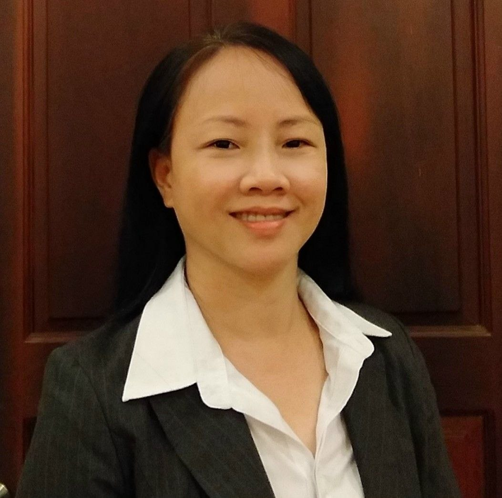

Minh Tran

Summary
I am a hardworking and dedicated individual with experience in physical therapy.
Education
Bachelor of Science in Physical Therapy
Arellano Universiy (2015-2020)
Work Experience
Physiotherapy Educator - ESUHAI Corp.
October 2021 - December 2021
- Design and deliver training programs for aspiring kaigos
- Provide mentorship to junior therapists or students on placement
- Create training materials, manuals, and e-learning content for teaching use
Project Officer - Vietnam Assistance for the Handicapped (VNAH)
October 2022 - September 2023
- Providing physiotherapy services to individuals with disabilities in collaboration with local healthcare providers.
- Reporting on project progress to stakeholders and funding bodies.
- Organizing workshops and training sessions for healthcare professionals and community workers.
Rehabilitation Officer - VietHealth
October 2022 - September 2023
- Providing training and guidance to local rehabilitation professionals to enhance their skills and service quality.
- Supported and took part in making and prescribing braces and orthoses for children with disabilities in Binh Phuoc, Tay Ninh, and Dong Nai provinces.
- Prescribed, ordered, and coordinated the delivery of braces, orthoses, and wheelchairs
- Provided training in caregiving skills to families of children with disabilities.
Founder, Director, CEO - Rehabilitation Consulting Company
October 2023 - present
Established and led a consulting firm focused on enhancing rehabilitation services in Vietnam.
Key responsibilities and achievements include:
- Developed strategic partnerships with NGOs, hospitals, and government agencies to promote inclusive rehabilitation models.
- Provided expert consultation on disability inclusion, assistive technology, and community-based rehabilitation (CBR).
- Advocated for accessible environments and improved service delivery for people with disabilities.
Skills
- Clinical Skills: ⭐️⭐️⭐️⭐️⭐️
- Communication Skills: ⭐️⭐️⭐️⭐️
- Organizational skills: ⭐️⭐️⭐️⭐️
Certifications
Other
My Hobbies: Reading, hiking, biking, and coding.
Contact Me
Email:minh.pt.tranthi@gmail.com
Phone: (+84)393381226
© Minh Tran. All rights reserved.